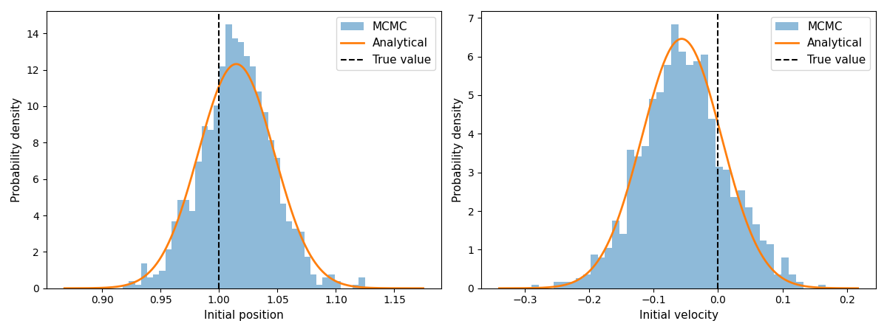

Bayesian estimation of initial conditions¶
This tutorial demonstrates how pardax can be used with
blackjax to solve a
Bayesian inverse problem.
Aim: Infer some initial conditions \(u_0 = u(\cdot, t=t_0)\) of a PDE from some noisy observations of \(u(\cdot, t)\) at a later time \(t > t_0\).
Note: This tutorial requires the following additional packages:
blackjaxmatplotlibscipy
Problem statement¶
We use the simple harmonic oscillator (SHO) as our forward model. The state \(u = [x, v]\) evolves as $$ \frac{dv}{dt} = -\omega^2 x, $$ where \(x\) is the position of the oscillator, \(v := \frac{dx}{dt}\) is the velocity and \(\omega\) is a known angular frequency. The above equations have an analytical solution, $$ x(t) = x(0)\cos(\omega t) + \frac{v(0)}{\omega}\sin(\omega t), $$ which we will use later to verify the recovered initial condition.
In our setup, we are given some noisy measurements of the position $$ m_i = x(t_i;\, u_0) + \epsilon_i $$ at times \(t_i > t_0\), where \(i = 1, \ldots, N\) and the noise terms \(\epsilon_i \sim \mathcal{N}(0, \delta^2)\) are identically and independently distributed. The task is to infer the initial condition \(u_0 = [x(0),\, v(0)]\) from the set of measurements \(\{m_i\}\).
Since the analytical solution is linear in \(u_0\), we can write all measurements compactly as $$ m = A u_0 + \epsilon, \qquad \epsilon \sim \mathcal{N}(0, \delta^2 I), $$ where \(A \in \mathbb{R}^{N \times 2}\) is the observation matrix with rows $$ A_i = \left[\cos(\omega t_i),\; \frac{\sin(\omega t_i)}{\omega}\right]. $$
Bayesian inference¶
From Bayes' theorem, the posterior probability density \(\pi^m(u_0) := \pi(u_0 \mid m)\) is given by $$ \pi^m(u_0) = \frac{\rho(m \mid u_0)\; \pi(u_0)}{\displaystyle\int \rho(m \mid u_0')\; \pi(u_0')\, \mathrm{d}u_0'}, $$ where \(\pi(u_0)\) is the prior probability density and \(\rho(m \mid u_0)\) is the likelihood. Directly evaluating the integral in the denominator is typically intractable, so we will draw samples from \(\pi^m\) using Markov Chain Monte Carlo (MCMC) instead.
Let the prior be a Gaussian centred at zero, i.e.,
$$
\pi(u_0) \propto \exp\left(-\frac{|u_0|^2}{2\sigma^2}\right),
$$
where \(\sigma^2\) is the prior variance.
With the observation model \(m = Au_0 + \epsilon\) and \(\epsilon \sim \mathcal{N}(0, \delta^2 I)\),
the likelihood becomes
$$
\rho(m \mid u_0)
\propto
\exp\left(-\frac{|m - Au_0|^2}{2\delta^2}\right)
$$
and the posterior is
$$
\pi^m(u_0)
\propto
\exp\left(-\frac{|m - Au_0|^2}{2\delta^2} - \frac{|u_0|^2}{2\sigma^2}\right).
$$
The logarithm of the above posterior is what we will pass to one of blackjax's samplers.
Analytical solution¶
By completing the square, the posterior density can be written as $$ \pi^m(u_0) \propto \exp\left( (u_0 - \mu)^\top \Sigma^{-1} (u_0 - \mu) \right), $$ where $$ \Sigma^{-1} = \frac{1}{\sigma^2} I + \frac{1}{\delta^2} A^\top A, \qquad \mu = \frac{1}{\delta^2} \Sigma A^\top m. $$ Thus, we have a closed-form expression for the posterior, $$ u_0 \mid m \;\sim\; \mathcal{N}\left(\mu,\, \Sigma\right) $$ which can be used to check the numerical solution.
1. Forward model¶
import jax
import jax.numpy as jnp
omega = 2.0 # angular frequency
def sho_rhs(t, u, omega):
"""Right-hand side of the SHO: du/dt = [v, -omega^2 * x]."""
x, v = u
return jnp.array([v, -omega**2 * x])
2. Generating synthetic observations¶
We pick a true initial condition, integrate forward, and add Gaussian noise to the position.
import pardax as pdx
u0_true = jnp.array([1.0, 0.0])
t_span = (0.0, 3.0)
dt = 5e-2
t_out, u_out = pdx.solve_ivp(
sho_rhs,
t_span=t_span,
y0=u0_true,
stepper=pdx.RK4(),
step_size=dt,
params=omega,
num_checkpoints=19, # number of intermediate observations
)
# drop the initial condition from the output
t_out = t_out[1:]
u_out = u_out[1:]
# Add noise to the observations
key = jax.random.key(0)
delta = 0.1 # standard deviation of the noise
n_obs = len(t_out)
t_obs = t_out.copy()
x_obs = u_out[:, 0] + delta * jax.random.normal(key, shape=(n_obs,))
3. Log-posterior¶
Taking the log of the unnormalised posterior and choosing a scalar prior variance \(\sigma^2\), we implement $$ \log \pi^m(u_0) \propto -\frac{|m - Au_0|^2}{2\delta^2} - \frac{|u_0|^2}{2\sigma^2} $$
sigma = 2.0 # prior standard deviation
def forward(u0):
"""Run the forward model and return predicted positions."""
_, u_hat = pdx.solve_ivp(
sho_rhs,
t_span=t_span,
y0=u0,
stepper=pdx.RK4(),
step_size=dt,
params=omega,
num_checkpoints=n_obs-1,
)
return u_hat[1:, 0] # positions at observation times
def log_posterior(u0):
x_pred = forward(u0)
log_lik = -0.5 * jnp.sum((x_obs - x_pred) ** 2) / delta**2
log_prior = -0.5 * jnp.sum(u0**2) / sigma**2
return log_lik + log_prior
Because solve_ivp uses jax.lax.scan internally, jax.grad can
differentiate through the entire forward integration:
grad_fn = jax.grad(log_posterior)
g = grad_fn(jnp.zeros(2))
assert g.shape == (2,)
4. MCMC with blackjax NUTS¶
NUTS (No-U-Turn Sampler) is a gradient-based MCMC algorithm that adapts
its trajectory length automatically. We use window_adaptation to tune
the step size during a warmup phase, then draw samples.
import blackjax
rng_key = jax.random.key(1)
initial_position = jnp.zeros(2)
# Warmup iterations to tune the step size
warmup = blackjax.window_adaptation(blackjax.nuts, log_posterior)
rng_key, warmup_key = jax.random.split(rng_key)
(state, params), _ = warmup.run(warmup_key, initial_position, num_steps=500)
nuts = blackjax.nuts(log_posterior, **params)
def one_step(state, rng_key):
state, _ = nuts.step(rng_key, state)
return state, state
rng_key, sample_key = jax.random.split(rng_key)
keys = jax.random.split(sample_key, 1000)
_, states = jax.lax.scan(one_step, state, keys)
samples = states.position # shape (1000, 2)
5. Analysing the results¶
We compare the MCMC results with the analytical posterior:
x0_samples = samples[:, 0]
v0_samples = samples[:, 1]
print("True initial condition:")
print(f" x(0) = {u0_true[0]:.3f}, v(0) = {u0_true[1]:.3f}")
print("\nNumerical (MCMC) results:")
print(f" Posterior mean: x(0) = {x0_samples.mean():.3f}, v(0) = {v0_samples.mean():.3f}")
print(f" Posterior std: x(0) = {x0_samples.std():.3f}, v(0) = {v0_samples.std():.3f}")
# Build the observation matrix A (shape: n_obs x 2)
A = jnp.stack([jnp.cos(omega * t_obs), jnp.sin(omega * t_obs) / omega], axis=1)
cov_post = jnp.linalg.inv(
(1.0 / delta**2) * (A.T @ A)
+
(1.0 / sigma**2) * jnp.eye(2)
)
mean_post = (1.0 / delta**2) * cov_post @ A.T @ x_obs
print("\nAnalytical results:")
var_post = jnp.sqrt(jnp.diag(cov_post))
print(f" Posterior mean: x(0) = {mean_post[0]:.3f}, v(0) = {mean_post[1]:.3f}")
print(f" Posterior std: x(0) = {var_post[0]:.3f}, v(0) = {var_post[1]:.3f}")
6. Visualisation¶
import matplotlib.pyplot as plt
import scipy.stats
fig, axes = plt.subplots(1, 2, figsize=(12, 4.5), layout="tight")
labels = ["Initial position", "Initial velocity"]
true_vals = [u0_true[0], u0_true[1]]
for i, (ax, label, y_true) in enumerate(zip(axes, labels, true_vals)):
# MCMC histogram
ax.hist(samples[:, i], bins=40, density=True, alpha=0.5, label="MCMC")
# Analytical Gaussian
x = jnp.linspace(samples[:, i].min() - 0.05, samples[:, i].max() + 0.05, 300)
pdf = scipy.stats.norm.pdf(x, loc=mean_post[i], scale=jnp.sqrt(cov_post[i, i]))
ax.plot(x, pdf, lw=2, color="C1", label="Analytical")
ax.axvline(y_true, color="black", ls="--", lw=1.5, label="True value")
ax.set_xlabel("Value")
ax.set_ylabel("Probability density")
ax.set_title(label)
ax.legend()
plt.show()
